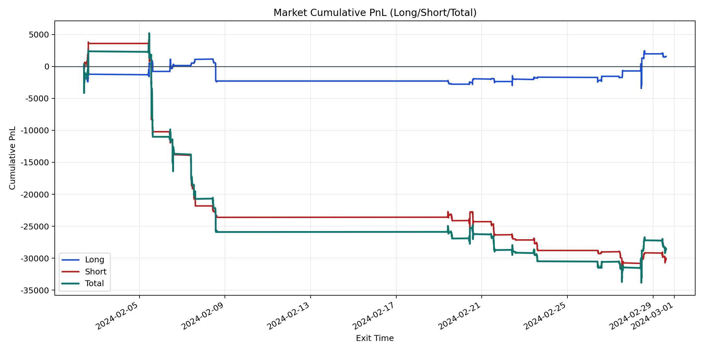
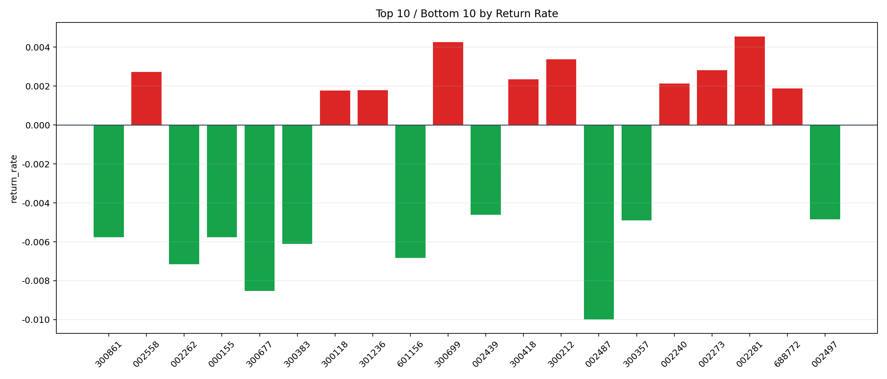

| repo_root | /home/haoranyou/data/output/alpha0.4_1w_5s_3ticks_index_filter/index_weights_500 |
|---|---|
| period_months | 1 |
| period_label | 2024-02-02_to_2024-02-29 |
| start_time | 2024-02-02 09:51:57 |
| end_time | 2024-02-29 14:40:37 |
| n_trades | 4420 |
| n_symbols | 72 |
| total_pnl | -28567.098850000024 |
| long_total_pnl | 1543.5136499999812 |
| short_total_pnl | -30110.612500000003 |
| total_entry_notional | 40475109.0 |
| long_entry_notional | 11475639.0 |
| short_entry_notional | 28999470.0 |
| total_return_rate | -0.0007057942413447243 |
| long_return_rate | 0.00013450350346503416 |
| short_return_rate | -0.0010383159588778692 |
| top_symbols_by_return | ["002281", "300699", "300212", "002273", "002558", "300418", "002240", "688772", "301236", "300118"] |
| bottom_symbols_by_return | ["002487", "300677", "002262", "601156", "300383", "300861", "000155", "300357", "002497", "002439"] |

